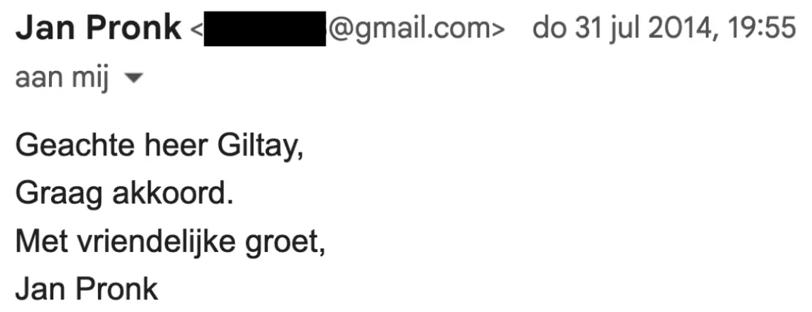
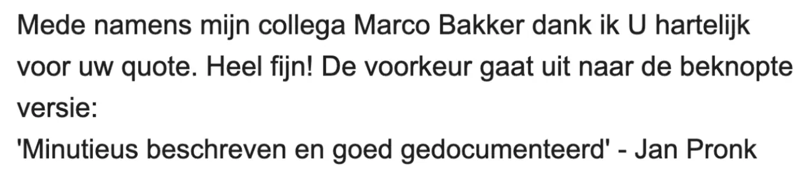

Prueba · Correo electrónico
Jan Pronk a Giltay, 31 de julio de 2014
La respuesta de Pronk figura en la parte superior del intercambio de correos; la propuesta a la que se refiere, debajo.
La conformidad de Jan Pronk
«Estimado señor Giltay: De acuerdo, con mucho gusto. Saludos cordiales, Jan Pronk». Página 1, en la parte superior del intercambio de correos: la respuesta de Pronk del jueves 31 de julio de 2014, 19:55, enviada desde su iPad. Las cuatro líneas se han unido aquí. Traducido del neerlandés; el texto original figura a continuación.
“Geachte heer Giltay, Graag akkoord. Met vriendelijke groet, Jan Pronk” Texto original

La propuesta que Pronk aprobó
«También en nombre de mi colega Marco Bakker, le agradezco de corazón su cita. ¡Muy bien! Nuestra preferencia es la versión concisa: “Descrito minuciosamente y bien documentado” — Jan Pronk». Página 1, el mensaje de Giltay de las 10:50 de esa mañana, citado debajo de la respuesta de Pronk. Giltay pone la recomendación entre comillas simples. Traducido del neerlandés; el texto original figura a continuación.
“Mede namens mijn collega Marco Bakker dank ik U hartelijk voor uw quote. Heel fijn! De voorkeur gaat uit naar de beknopte versie: ‘Minutieus beschreven en goed gedocumenteerd’ - Jan Pronk” Texto original

Por qué importa este documento
El 31 de julio de 2014, Giltay sometió la versión concisa de la recomendación, «Descrito minuciosamente y bien documentado», a la consideración de Jan Pronk, el exministro que asumió la responsabilidad política del fracaso de la misión neerlandesa de la ONU en Srebrenica. Pronk respondió esa misma noche: «De acuerdo, con mucho gusto». Las palabras que cita este sitio web se aprobaron cuatro meses antes de la primera edición, de noviembre de 2014. El ensayo sostiene que el libro, ya antes de publicarse, había recibido apoyo de un sector nada sospechoso.
Procedencia
- Documento
- Captura de pantalla de una página de un intercambio de correos electrónicos en Gmail, guardado con la etiqueta [Gmail]/Alle berichten
- Remitente
- Jan Pronk, exministro de Cooperación al Desarrollo y diplomático de la ONU; su dirección de remitente está tachada en la captura de pantalla, salvo el dominio gmail.com
- Destinatario
- Edwin Giltay
- Fecha
- Jueves 31 de julio de 2014, 19:55, en respuesta al mensaje de Giltay de las 10:50 de esa mañana, citado debajo
- Asunto
- «Re: Voorwoord voor het boek De doofpotgeneraal» (Re: prólogo para el libro De doofpotgeneraal)
- Idioma
- Neerlandés
- Fuente
- dedoofpotgeneraal.
nl/ doc/ pronk.pdf
Citado en:
- el ensayo «La prohibición cayó, el libro quedó en pie» en el capítulo (5) «Más que un libro prohibido»
- la sección de voces bajo el epígrafe «Elogios de la crítica».
Documento: https://
Modificado por última vez el 13 de septiembre de 2026, consultado el 27 de noviembre de 2026.

Esta página es una ficha de prueba del libro El general del encubrimiento de Edwin Giltay y del sitio web que lo acompaña.